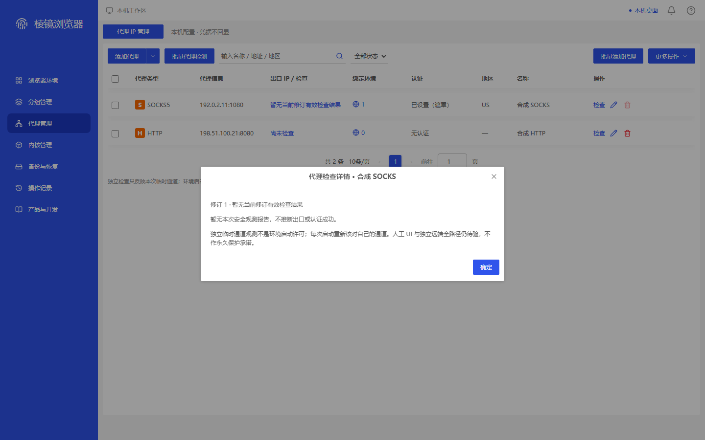
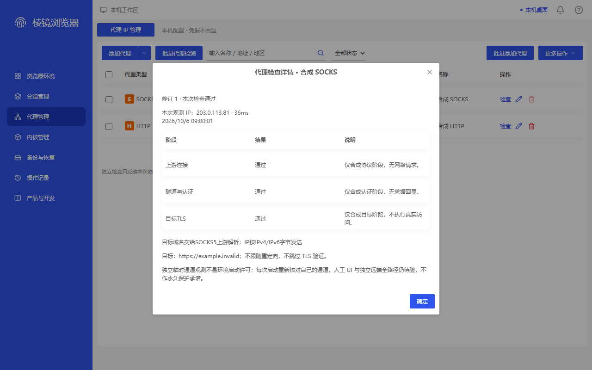
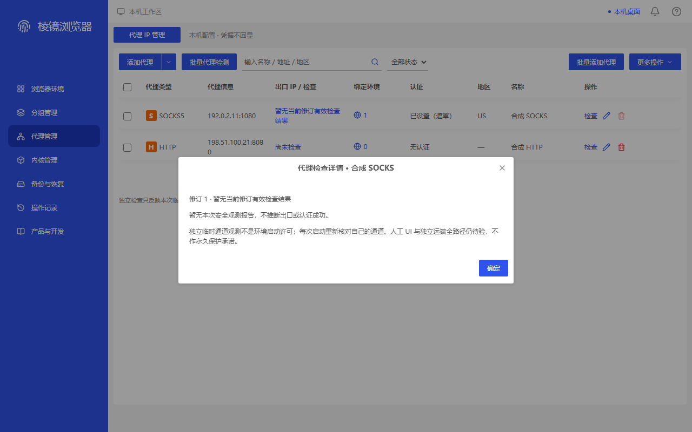

本包逐图公开合成界面、准确来源及独立结论。ADAPTED是明确适配；MAPPED是同类容器；MISSING是缺直接原参考；FAIL保留可见问题。拍图/并包完整不等于严格全产品1:1，也不证明真实桌面。旧图、旧失败和旧源码身份不倒改；修复须另看新来源。
verified-proxy-row-and-detail-current · 1440×900
MAPPED — Full PNG viewed. Foreground 620x544 report at (410,186) shows 修订 1 · 本次检查通过, synthetic 203.0.113.81 / 36ms / timestamp, three passed stages, complete boundaries and readable blue-white confirmation. Background fourth-cell status/IP is occluded by this modal; 本次检查通过 row text is supported by the stored exact td[3] button assertion/innerText, not directly visible pixels. Same-viewport original proxy-edit is a 620x726.15625 editing-container anchor only. P33 bounded valid-current-report observation; no new P31 failure or real reachability claim. No demonstrable new visual defect.
同类参考容器：proxy-edit；不是同名原商业执行。

e0a9c785cd421899f5fb0a02a17fdeefc5f01d55b1d6bb5a4a9221f82a25aaa5
verified-proxy-row-and-detail-stale · 1440×900
MAPPED — Full PNG viewed. Background fourth-cell row button and foreground 620x234 detail at (410,341) both visibly say 暂无当前修订有效检查结果. Single-line row text fits; foreground has no stale IP observation block or stage table and its boundary/footer are complete. Same native ID, record revision 1 versus report revision 0, raw connected unchanged. P34 exact revision-mismatch defensive response branch only, not all wrong-proxy cases or normal Go production. Original proxy-edit is a same-viewport container anchor, not the same report business. No demonstrable new visual defect.
同类参考容器：proxy-edit；不是同名原商业执行。

bbadb9fd6b67cb7ebdd066879eef3666ea6e7ca84634c683466a94dd69021eff
verified-proxy-row-and-detail-current · 1280×800
MAPPED — Full PNG viewed. Foreground 620x544 report at (330,136) keeps current success, synthetic 203.0.113.81, three passed stages, full warnings and confirmation inside the viewport; natural text wrapping is readable. Background fourth-cell status/IP is occluded; stored exact row-button DOM assertion supports success, not a claim that PNG visibly shows that row text. Same-viewport original 620x726.15625 proxy-edit anchors only container hierarchy. P33 bounded valid-current-report visual, not P31 failure coverage or a network check. No demonstrable new visual defect.
同类参考容器：proxy-edit；不是同名原商业执行。

bbf6ea6e971996c0cf0fb7006d8fa81625a9a6b619ff5d4318584926e7964931
verified-proxy-row-and-detail-stale · 1280×800
MAPPED — Full PNG viewed. Background row and foreground 620x234 detail at (330,291) visibly agree on 暂无当前修订有效检查结果, without old 203.0.113.81 or foreground stages. Row label wraps to two complete lines; neighbouring HTTP host:port wraps the final 0 onto its second line but loses no character and overlaps nothing, not a clipping FAIL. Checkbox remains unchecked and filter shows 全部状态; raw connected/filter classification is not changed or recertified. P34 same-ID revision mismatch only; original proxy-edit is a container primitive anchor. No demonstrable new visual defect.
同类参考容器：proxy-edit；不是同名原商业执行。

6662f76d4afa36e0e21d8b61f95cc8536531392215a43a8ab51fad17b3db10dd